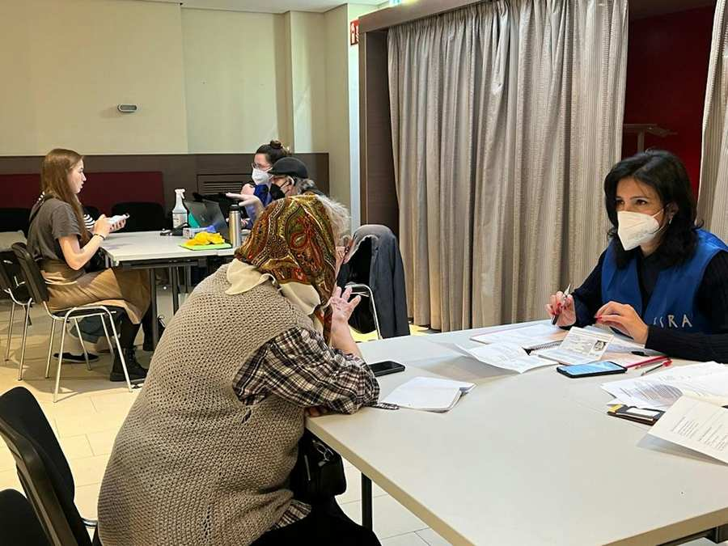
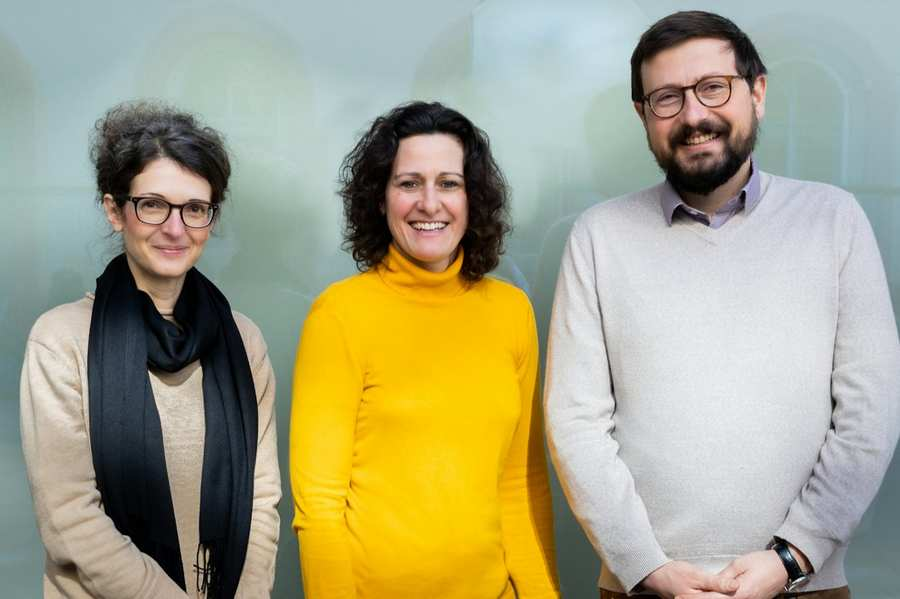

Psychosocial & Medical help

ESRA, our psychosocial institution, provides comprehensive professional help to people in need of mental and physical health care and social counseling. One focus of care and counseling are people who have been traumatized as a result of persecution, torture, migration, abuse, disasters or other serious events. In this interview, Chairwoman Dr. Jasmin Freyer, Chief Medical Officer Prim. PD Dr. Dr. Benjamin Vyssoki and Chief Financial Officer Dr. Susanne Schütt explain the challenges and needs Jewish refugees from Ukraine are facing.
How did you experience the arrival of the refugees?
Studies have shown that about a third of all refugees require psychosocial aid and since we have started, we have taken care of more than 500 individuals. Every story is unique, and everyone deserves to receive the best care as well as the feeling of security. Still, many refugees are concerned about the ones who stayed home. Many women have husbands fighting in the war and many parents or grandparents did not want to leave their homes. It is often the mothers who must make the difficult decision to flee the country in order to protect their children. This tension can be devastating for some. Therefore, they require and receive our assistance.
How did ESRA view the community’s reaction to the war in Ukraine?
The community undertook an unprecedented effort to help. From the very start, ESRA was part of the emergency task force within the Jewish Community of Vienna. Our multi-professional mobile outreach teams consisting of doctors, psychiatrists, nurses, clinical psychologists and psychotherapists were there for the refugees from the very day they arrived in one of the welcome centers or when they came to one of the many kosher dinners and lunches the community provided. This created an aid system that welcomed the refugees in Vienna, and we want to thank all our partners, especially the numerous volunteers for their support!
Can you tell us anything about the situation children are facing?
Leaving their familiar environment, being away from their friends, the insecurity when fleeing the country, the psychological pressure as well as the despair their parents are facing are immense disruptive elements for children. Of course, they miss their home, their fathers, grandparents and friends! They went through terrible experiences. The welcome classes in our Jewish schools help them to get in touch with peers and to reenter school. Our psychotherapists and clinical psychologists support them at the schools as well as with group therapy. We are and will be here for the long term. This is not a two-month process by any means.